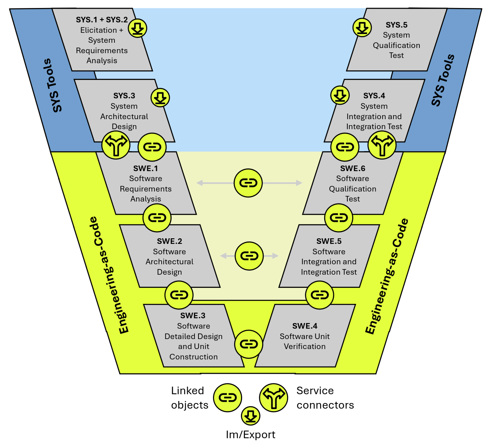
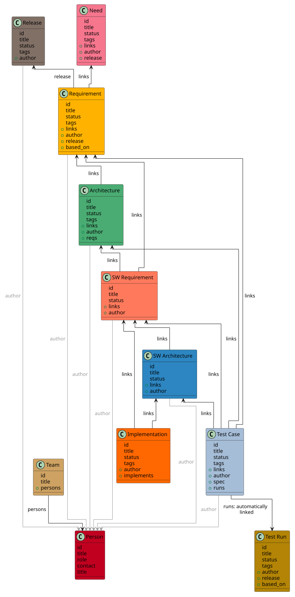

Demo page details
Page source code: index.rst
1
2
3
4
5
6
7
8
9
10
11
12
13
14
15
16
17
18
19
20
21
22
23
24
25
26
27
28
29
30
31
32
33
34
35
36
37
38
39
40
41
42
43
44
45
46
47
48
49
50
51
52
53
54
55
56
57
58
59
60
61
62
63
64
65
66
67
68
69
70
71
72
73
74
75
76
77
78
79
80
81
82
83
84
85
86
87
88
89
90
91
92
93
94
95
96
97
98
99
100
101
102
103
104
105
106
107
108
109
110
111
112
113
114
115
116
117
118
119
120
121
122
123
124
125
126
127
128
129
130
131
132
133
134
135
136
137
138
139
140
141
142
143
144
145
146
147
148
149
150
151
152
153
154
155
156
157
158
159
160
161
162
163
164
165
166
167
168
169
170
171
172
173
174
175
176
177
178
179
180
181
182
183
184
185
186
187🚗 Automotive ADAS
TeamSoftware Development Project for ADAS ComponentsADAS
This project focuses on developing a modular software platform for Advanced Driver Assistance Systems (ADAS), aimed at enhancing vehicle safety and automation. The primary objective is to create a robust system that integrates multiple functionalities such as lane-keeping assistance, adaptive cruise control, emergency braking, and pedestrian detection.
- 📦 Releases
- 🧍 Persons
- 📊 Analysis
- 🌎 External Data Examples
- SYS.1 Requirement Elicitation
- SYS.2 Requirement Analysis
- SYS.3 Architecture Design
- SWE.1 Software Requirements
- SWE.2 Software Architecture
- SWE.3 Detailed Design
- SWE.4 Unit Tests
- SWE.5 Integration Test Cases
- SWE.6 Qualification Test Cases
- SYS.4 Integration Test Cases
- SYS.5 Qualification Test Cases
- SYS.5 Qualification Test Results
V-model and service connectors

Commercial connectors for the following services are available by useblocks: Codebeamer, Jira, Azure DevOps, Github, Excel.
Demo Object and Meta Model
